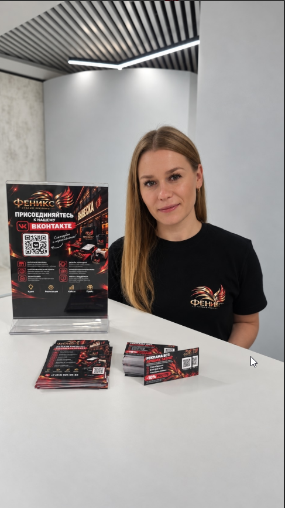

Чтобы вас
было видно
Световые короба, объёмные буквы, таблички и навигация. Разработка макета и монтаж.
Обсудить наружную рекламу ↗ИДЕЯ. МАТЕРИАЛ. РЕЗУЛЬТАТ.
Наружная реклама, полиграфия, мерч и оформление мероприятий. От разработки макета до монтажа — в одной студии.

01 / ЧЕМ ПОМОЖЕМ
Нужно открыть точку, подготовить мероприятие или напечатать материалы? Начнём с того, что нужно вашему бизнесу.
Световые короба, объёмные буквы, таблички и навигация. Разработка макета и монтаж.
Обсудить наружную рекламу ↗Визитки, листовки, сертификаты. Фирменная одежда, сувениры и мерч.
Обсудить печать и мерч ↗Баннеры, пресс-воллы и фотозоны. Оформление конференций и праздников.
Обсудить мероприятие ↗Сайты-визитки, посадочные страницы и оформление социальных сетей.
Обсудить digital-задачу ↗02 / ВЕЩИ, А НЕ ОБЕЩАНИЯ
Здесь будут реальные работы студии: от небольшой полиграфии до оформления пространств.
Стойка, печатные материалы и фирменная футболка видны на снимке. Состав выполненных студией работ ещё нужно уточнить.
Нужны фото готового объекта, задача клиента и перечень выполненных работ.
Нужны фото изделия, способ нанесения и подтверждённые детали заказа.
Нужны общий вид, детали оформления и описание участия студии.
03 / ДАВАЙТЕ ЗНАКОМИТЬСЯ
Софья БажинаОснователь студии «Феникс»
Привет! Я Софья Бажина. В рекламе с 2012 года, и я точно знаю: бизнесу не нужна «просто картинка». Ему нужны инструменты, которые приводят клиентов.
Я создала студию «Феникс», чтобы вам не приходилось искать пять разных подрядчиков для одной задачи. Мы берем на себя всю головную боль: от разработки макета и печати мерча до монтажа сложных световых коробов.
Делаем честно, в срок и с душой. Вы занимаетесь бизнесом, а мы делаем так, чтобы о вас знали. Потому что ваша репутация — это и наша репутация.
«Ваша репутация —
это и наша репутация».
04 / БЕЗ ЛИШНИХ НЕИЗВЕСТНЫХ
Вы рассказываете о задаче, пожеланиях и нужной дате.
Уточняем материалы, стоимость и макет до производства.
Изготавливаем согласованные рекламные материалы.
Вы получаете заказ. Если нужен монтаж — обсуждаем его заранее.
05 / СТОИМОСТЬ
Размеры, материалы, тираж и монтаж влияют на стоимость. Пришлите задачу, пример или готовый макет — обсудим детали и подготовим расчёт.
Обсудить расчёт ↗Не всё известно? Начнём с вашей идеи.
06 / НАЧНЁМ С РАЗГОВОРА
Расскажите, что нужно сделать и к какой дате.
Если есть макет, размеры или пример — приложите их к сообщению.